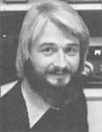

Copthorne Macdonald is the inventor of
slow-scan television . . . a method of
amateur radio transmission that allows ham
operators to both hear and see each other
during shortwave broadcasts.Imagine this:
Wanting to get a message to a friend, you sit down in front of the of panel of keys, type out your letter, then hit a special button .. . and, within seconds, your "note" travels by radio to your pal's home, even if he or she lives a thousand miles (or more) away.
Does it sound like science fiction? Well, "mail by radio" is likely to be just one of the innovations resulting from the soon-to-come "marriage" between microcomputer technology and ham radio. In addition, computer enthusiasts who have access to commercial, university, or personal data banks will be able to share their "keys" to all that information with ham friends a continent away . . . and ongoing computer conferences may also become possible, free of the expense of long distance telephone charges. Since the FCC decision - earlier this year - to allow ASCII "computer language" to be transmitted over the ham bands, the "trip to the altar" for the two technologies is a foregone conclusion ... and ham/computer groups all over North America are now working out the details of the coming union!
And what might such a combination of capabilities mean to us New Directions Radio folk? You may recall that, back in MOTHER NO. 61, I discussed the fact that a goodly number of NDR people are eager to see such technologies used as tools that can be employed in the creation of the sane, humane, ecological future that most of us are both dreaming of and working toward.
A few recent breakthroughs indicate - you'll be pleased to know - that people across the country are taking advantage of today's high-tech innovations to work for the good of the planet. During my recent West Coast trip, for example, I spoke with Conrad Greenstone (WD6GMW) . . . a gentleman who's involved in setting up a computerized agricultural information center that'll be accessible to the "alternative" community - throughout North America - via radio or telephone. (You can write Conrad at the Planetary Homestead Foundation, Dept. TMEN, Box 578, Covelo, California 95428.)
Dennis McCracken (Dept. TMEN, Rt. 1, Box 1056, Suisun, California 94585) is another westerner who's determined to help cleanse the reputation chat technology has acquired in the past few years. He recently proposed the establishment, by both community groups and individuals, of "global communication stations". As Dennis envisions them, such facilities would have telephones, personal computers, ham stations, and perhaps even video recorders and cameras ... all of which would be available as public service communication tools.
He points out that plenty of folks today are interested in the technical aspects of computers and radio ... and that such people could help "man" the stations, so that actual use of the tools wouldn't be limited to people with great amounts of "tech-ability". Dennis also reports that he's currently working up a project guide, a booklet that will "provide step-by-step instructions for locating the resources (both the required people and the necessary equipment) to set up such communication centers ... for establishing a temporary station using borrowed equipment ... and for assembling the 'ideal' system, in cases where money is no object". If you'd like to help get such a facility going, or if you simply want more information, drop Dennis a line.
PROTOCOL, MY GOOD MAN!
As many of you may already know, computers - and computer terminals - cannot "correspond" with each other unless they use not only the same basic code for each letter and numeral and punctuation mark, but also the same message exchange procedure, or "protocol". Several groups of computer hobbyists are now experimenting to determine the optimum protocols for both telephone and radio use.
Traditional teletype computer transmission, you see, involves a very simple message exchange procedure . . . which does not provide for either error detection or correction. Today's advanced microcomputers, however, feature very rapid data processing capabilities, which allow the use of more sophisticated protocols . .. procedures that permit error-free transmission over even less than perfect communication paths.
If you're interested in working to develop new protocols that might be helpful In telephone or radio computer use, you might get in touch with Dave Caulkins (PCNET Project, Dept. TMEN, 1263 El Camino Real, Menlo Park, California 94025) who, with the Personal Computer Network, is developing phone-line protocols. (The state of ongoing packet radio protocol research, on the other hand, is described in the Packet Radio Newsletter, available - for $5.00 per four issues - from Art Blick, CARF, Dept. TMEN, P.O. Box 356, Kingston, Ontario, Canada K7L 4W2.)
Now I don't know just how soon our New Directions Radio group can get any kind of computer/ham hookup on the air. The fact is, since I don't yet have a computer of my own, I've just about decided to wait until the protocol situation has matured a bit to try to locate hardware that fits the sometimes stringent limits of my budget.
But I'd like to urge any hams who do have personal computers to jump right in there and start communicating . . . using trial protocols for the time being. Rick Glossa (N7ANL) would be ecstatic - he says - to locate at least one NDR computer/ham station on each North American coast in the near future . . . and I think his goal is both worthwhile and achievable.
For my part, I'd be glad to act as a sort of liaison to help pull any NDR computer/ham activity together. However, as you can imagine, I'm going to need lots of help to get the job done. I'm not - after all - a computer expert, and the emerging technology involves such complexities as microcomputer hardware, programming, and data transmission techniques . . . as well as the know-how involved in operating my beloved ham radio. Any of you who are knowledgeable in the more esoteric (to me) fields would be doing all of us a big favor by dropping me an occasional line about successful and failed experiments, suitable and unsuitable gear, and so forth.
IN CONCLUSION
Since this issue's column deals with technologies that could help us work toward a humane, ecological future . . . I want to close by recommending James Robertson's new book, The Sane Alternative. Robertson brings a unifying focus to many facets of our emerging "new age" culture. And his comments on the importance of the informal "gift" economy are of particular relevance to us hams ... as most of us are a part of it. (In case you didn't know, amateur radio operators are forbidden - by international, and in most nations federal, law - to accept any material compensation for on-air services!) The book is available from River Basin Publishing Company, Dept. TMEN, P.O. Box 30573, St. Paul, Minnesota 55175 ... for $5.70 postpaid.
Peace,
Cop Macdonald (VE1BFL)
P.O. Box 2941
Charlottetown
Prince Edward Island
Canada C1A 8C5
New Directions Radio is an international network of radio amateurs concerned with those ways of using ham radio (and related modes of communicating) that promote our own growth as individuals, and which we perceive as helping to create a more aware, more caring, and more responsible human society. We encourage all who share these interests to work with us. A current schedule of on-the-air activities is included in each issue of the bi-monthly New Directions Roundtable Newsletter , published by Art Mourad (WB2POB) as a service to the rest of us. To subscribe, send 25 cents for each issue desired to Art Mourad, P.O. Box 787, Bergenfield, New Jersey 07621.
|
 Copthorne Macdonald is the inventor of slow-scan television . . . a method of amateur radio transmission that allows ham operators to both hear and see each other during shortwave broadcasts. |
|
|